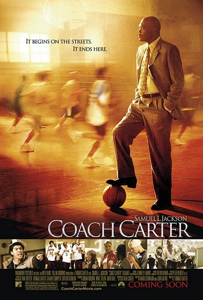

Cultura do Basquete
Aqui nós vamos exibir um pouco da cultura do basquete através de livros, filmes e música
Filmes
Top 5 filmes de basquete
- He got game: A jogada decisiva
- Eddie, A treinadora
- Homens Brancos não sabem enterrar
- Coach Carter, treino para a vida 
- Space Jam: O jogo do século

Livros
- Kobe Bryant - The Mamba Mentality
- Depois que deixou as quadras, Kobe Bryant já conquistou um Oscar pelo curta-metragem Dear Basketball. Bem-sucedido também no cinema, o ídolo do Los Angeles Lakers inicia sua trajetória na literatura com The Mamba Mentality.
- Onze Anéis: A alma do sucesso
- Na história da NBA, nenhum treinador foi tão vitorioso quanto Phil Jackson. O nome do livro é uma referência aos 11 anéis conquistados pelo ex-técnico de Chicago Bulls e Los Angeles Lakers na maior liga de basquete do mundo — é tradição nos Estados Unidos premiar os campeões com anéis em vez de medalhas.
- Oscar Schmidt: 14 Motivos Para Viver, Vencer e Ser Feliz
- O livro 14 motivos para viver, vencer e ser feliz mostra cada passo dado para por Oscar Schmidt para alcançar várias conquistas e se tornar o maior cestinha da história do basquete.
- The Jordan Rules: The Inside Story of Michael Jordan and the Chicago Bulls
- The Jordan Rules: The Inside Story de uma temporada turbulenta com Michael Jordan e Chicago Bulls é um livro de 1992 escrito por Sam Smith, narrando a temporada de campeonatos do Chicago Bulls de 1990-91.
Música
Músicas retiradas da playlist no spotify "As 10 inesquecíveis músicas que marcaram a NBA"
- Jam - Michael Jackson
- Space Jam - Quad City DJ's
- Let's Get It Started - Black Eyed Peas
- Shoot Pass Slam - Shaquille O'Neal
- Are you ready to fly - Rozalla
- A kind of Magic - Queen
- Battle Scars - Lupe Fiasco
- Winner - Jamie Foxx
- Can't Stop
- Worth It